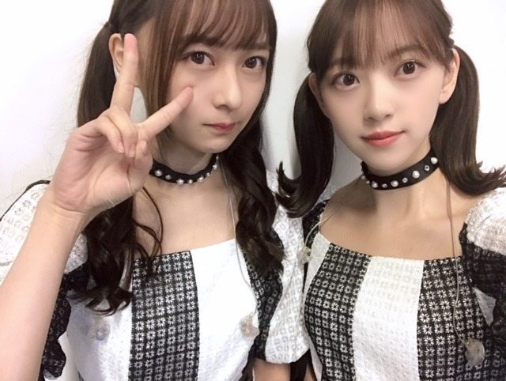
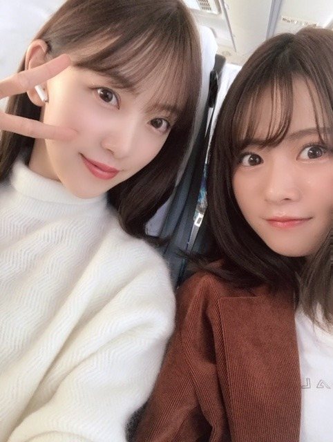
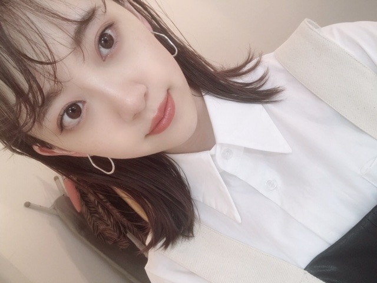

2019/1111Monゆず茶ってずっと言い続けてた飲み物、実はゆずは入っていないただの生姜はちみつ茶でした
ゆず茶飲みたい〜
ゆず茶まだある？
ゆず茶冷めちゃった〜
私がずっと"ゆず茶"と認識して"ゆず茶"と呼んでいた母お手製の喉にいいお茶
だがしかし
ある日突然そのときは来ました
ちょっと待って
ゆず入ってなくない？
母に恐る恐る聞きました
これってゆず入ってる？
母
ううんはちみつと生姜だけ
え？？？
ちょっと待って？？？
はちみつと...生姜？？
ナゼ自分がこんなにも ゆず茶だと思っていたのかはわからないし
勘違いってコワイ
（＾_＾）

チョーカーってかわいくてすきだなぁ
たくさん付けたい！
この間のmステでもキラキラのチョーカーしてました！
アクセサリー、洋服、メイク、身の回りにキラキラをたくさんつけたい❤︎

AirPods、次は落とさないようにしなきゃ。
もうニットきはじめちゃってる。
早いかな？？

arみてね！
では☺︎
2019/11/11 16:06


コメント(277)
れなちゃんとのツーショット可愛い❤️
頑張ってね❤️
衝撃の事実を知ったわけだねー(〃ω〃)
意図を汲んで蜂蜜生姜を作ってくれてたお母さんも、
パンを買ってくれるお母さんも、
心温まる家族のひとコマ、
俺も実家の母に電話でもしようと思った！
絢音ちゃんやれなちとの写真、
載せてくれてありがとー！！
あやねちゃんと、ザキさんとのツーショット最高！
arチェックします！
またコメントします！
ブログ更新ありがとう！
ゆず茶美味しそー！
でもはちみつと生姜だけだったんだね笑
未央奈のツインかわいい！
衣装も似合ってる！
ツーショットみんなかわいい！
ar見るね！
これからも応援してる！
がんばれー！
(^ー^)
しかし、たくさん付けたら‥‥、苦しくないですか？
ブログ更新ありがとうございます♡
幕張、握手させて頂きました(*´꒳`*)
未央奈ちゃんが使ってる乳液、
わたしも使ってみようと思います♡
幕張寒くてびっくりしました…！
体調に気をつけてお仕事頑張ってください！
応援してますʕ•ᴥ•ʔ♡
未央奈ちゃんが勘違いとは珍しい！
実際飲んだら、はちみつ、生姜しか入ってないなんて、それもそれだよね笑
チョーカー似合う
ニットも、着るの速くないと思います。
ここ最近寒いので着てもいいと思うよ。
あと、乃木坂工事中VTRクイーン優勝に、
期待してます。チョーカーや、きらきらの服姿
乃木坂工事中の中で観てみたい。その願い叶いますように。ちょくちょくブログ更新お願いします。
ニットを、生かすファッション教えて下さい。
ツインテール姿を生かすファッション教えて下さい。
それでバイバイ未央奈ちゃん。
チョーカー衣装にも合ってて御二人可愛い
、最高です！！
純白ニットいいですね！体調崩してからでは遅いですからね、冷え対策だし可愛い！
今日もありがとうございました。
そういう勘違いってほんとに怖いよね笑
俺も気をつけよ！笑
今回も可愛い写真ありがとう(･∀･)
福岡のトゥモロー⊿
どんどん可愛くなってる！！！
そして、あさって13日の夜は、日本テレビで生放送されるベストヒット歌謡祭が神戸市内の会場で開催されることになるね❗ 。
僕も未央奈ちゃんを始め乃木坂46の皆様の出演を楽しみにしています 。
握手会お疲れ様でした
そうそう
先日の握手会
絢音ちゃんがデニムだったんですよね。初めて見ましたけど可愛いですね(*´艸｀*)
ar絶対にみます。
ブログ更新ありがとう！
可愛さと少し抜けてる部分がとても魅力的です。
これから寒くなってくるので、風邪には気をつけてください!
応援しています☺️☺️
ゆず茶の衝撃的な事実ですね！！
でも、喉のために蜂蜜生姜を作ってくれてたお母さん優しいですよ
パンを買う堀家もね
これからも頑張ってね✨
体調に気を付けて頑張ってください✨
ブログ更新ありがとう。
最近はインスタも頻繁に更新してくれてうれしいよ。リップの動画見たよ。
かわいいよー。
勘違いコワイネね。
私はずっとイベリコ豚をイベリ子豚だとおもってたよ(笑)
今日のショット仲良し2期生
彩音ちゃんとれなち、いいね。
ニットぜんぜん早くないと思うよ。
むしろ今が一番着るときじゃない?
ar見るよ！
バイバイキーン
ニット俺もきてるから大丈夫！肌寒くなってきたしね！
とりあえず、癒されました
次の全握行くよ！！
頑張って！！
未央奈&絢音、未央奈&れなちのコンビ良きです。
また他のメンバーとの2ショット載せてね！
次のブログ楽しみです！
ちゃんと見てるよ！！
勘違いってあるよね～
私もよくする
ツインテ堀ちゃん可愛い❤
チョーカーもいいよね！
Twitterカコミオナ懐かしかった！
黒髪ロングも好きだったなぁ
バレッタの頃を思い出す
インスタも参考になった！
arかっこいいね！
是非、チェックします！
逃走中も絶対観るね
ではまた(*´∇｀*)
喉･･･そして身体が温まりそう。
ゆず入ってなかったんですね～(笑)
何事も疑問を持つことの大事さね(笑)
キラキラね～
光魔法？（元ネタは～）
珍しいツーショットですね。
あれでしょ？
「美しい女性」ですよね(本人に聞いてね～笑)
ニット･･･じゃないけどね。
春の終わりに
「これは春・秋に暖かく着れそうだ～」
って購入した上着があるんだけど～
それを最近の少し寒い日に着たら暖かかったのね。
･･･
そこで購入時のことを思い出したのね。
「あれ？たしか･･･ヒートテック素材だったような･･･」
確認したらヒートテック系だった！！(笑)
まだ頼るつもりがなかったから
ちょっと敗北感(笑)
ふふ･･･もう着てしまったよ･･･
だ、大丈夫･･･早くないよ･･･
もう雑誌も冬服でしょ？(笑)
ゆず茶の話面白かった笑
最近絢音ちゃんとの写真多いよね！！！
コンビ名とかあるんですか？笑
ワイヤレスのイヤフォン落として無くすの怖いよね。。。
ニット似合ってるよ！
これからも頑張ってね！応援してます！
たしかに勘違いは怖いね笑
写真集も楽しみ！
ところで質問コーナー的なのって回答ありましたか？(まさか見忘れた！？それだったらごめんね。)
受験終わったら絶対会いに行きます！！
ブログ更新ありがとうございます。
「ゆず茶」のエピソード、なんかほんわかしますね。でもこれで「のどの薬」「風邪薬」として、機能してきたんですから、ありがたいことですよ。私は、これからの時期、お世話になるのが「かりん湯」です。未央奈も試してみては‥‥。
この前の「のぎおび」、絢音ちゃんに急きょ交代。一言伝えただけで、すべてを察し、ちゃんとこなしてくれる関係は実に素晴らしいですね。今度みり愛ときいちゃんと飛行機の番組に出るみたいで楽しみですね。
「ar」も見たいけど‥‥、さすがに買えません。
堀ちゃんちのにそれを溶かせばりっぱな柚子茶だねー
絢音ちゃんとの２ショット写真最高です
生姜ハチミツをゆず茶だと思って飲んでた未央奈ちゃんかわいいです。
でも生姜とハチミツ喉にいいからお母さんやさしいね。
ツインテールの未央奈ちゃん&絢音ちゃんかわいいです
体調気をつけてね。
風邪ひかないようにね。
またね。
かわいい♡
チョーカーもかわいい♡♡
来月の全握やっと行けるから楽しみです♪
ブログはいつもと違った感じの始まりでおもしろいよ。
勘違いは怖いよねー。
どれもとってもかわいい画像嬉しいよ。
今週はベストヒット歌謡祭あるね、生放送なのかな?
ここでも未央ちゃん見れるの楽しみです。
もちろんレコメンも楽しみだからね。
風邪こじらせないようにきおつけてね。
ではではでは
母がなぜそれを訂正しないのか
それが不思議だ。
きっと､その気持ちは首長族が一番よくわかってくれると思うよ～？
勘違いって怖いねー＠＠；
周りの人達は違和感と感じていても
勘違いによって自分の中では"真実"となってしまう．．．
いやー、怖い世の中です(笑)
でも、１つ勘違いに気づけて良かったね！
何となく気が晴れなかった？
今度は、本当のゆず茶が飲めますように♡
ツインテール戴きました♡
これから本格的に寒くなると思うので
ニットはタイミング的にバッチリな気がする！
暖かい格好してお過ごし下さい＞＜ゞ
柚子の入ってないただのハチミツ入りの生姜湯、飴湯ってやつだね( ＾∀＾)
ちなみに飴湯を冷やすと冷やし飴って言って冷やしても美味しいよ( ＾∀＾)
『のぎおび』ちょっと残念だったな(´・ω・`)
ゆず茶の話は思い込みもお母さんに通じてたことも両方不思議ですね。でもはちみつと生姜とゆずって合いそうだから”ゆず茶”と呼び続けることで、いつか堀さんのお母さんがゆず無しゆず茶だけじゃなく、ゆず入りゆず茶も作ってくれたら良いですね。
1枚目の写真はチョーカーもツインテールも衣裳も堀さんも、とにかく全部余すところなく可愛いです。キラキラした堀さん好きです。
寒くなって来たおかげで堀さんのニット姿が見れるんですね。有難い限りです。チョーカーに鈴つけてコタツで丸くなって欲しいくらい可愛いです。
arも見ますね。風邪治るまで無理しないでくださいね。
もうここまで来たら
未央奈のお母さんが作る喉にいいお茶のことを
堀家ではゆず茶って呼ぶってことでいいんじゃない？
なんか、喉に効きそうだし。笑
俺んちでもゆず茶って呼ぼうかな～笑
ar見るね～
今日はのぎおびだね～
仕事だけど少しでもリアルタイムで見れたらいいなぁ
モンキー見れるかな？
幕張個握行ったよ
愛してるゲームして欲しかったな笑
次の名古屋全握も行くよ
喉お大事にね
コメントする